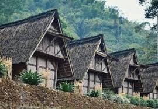

kampung adat yang berada di Desa Sirnaresmi, Kecamatan Cisolok, Kabupaten Sukabumi, Jawa Barat
Kampung Adat Ciptagelar téh lokasina di Desa Sirnaresmi, Kacamatan Cisolok, Kabupatén Sukabumi, Jawa Barat. Kampung ieu mangrupakeun salah sahiji kampung adat nu masih ngajaga tradisi jeung kabiasaan lokal ti masarakat Sunda, utamana masarakat anu asalna ti Suku Sunda Ciptagelar. Sajarah singkatna dimimitian ti abad ka-14, nalika masarakat Ciptagelar nyicingan daérah ieu. Maranéhanana asalna ti wewengkon Karajaan Pajajaran jeung kaasup masarakat nu tetep ngajaga adat jeung kabudayaan Sunda. Aranjeunna milih cicing di wewengkon pagunungan supaya bisa ngajaga tur ngadegkeun adat istiadat anu aya. Ciptagelar kasohor ku sistem kekeluargaan jeung adat istiadat anu pohara dijaga, saperti aturan ngeunaan pembagian lahan pertanian, upacara adat, jeung ngajaga hubungan anu raket jeung alam sabudeureunana. Kampung ieu ogé dikenal ku sistem pertanian anu lestari, nyaéta ku ngamangpaatkeun téknologi pertanian tradisional jeung ngajaga kelestarian lingkungan. Dina taun-taun ahir, Kampung Adat Ciptagelar jadi perhatian loba pihak alatan kasuksésan maranéhanana ngajaga kabudayaan jeung adat anu geus ngalaman ratusan taun, sanajan aya pangaruh perkembangan jaman. Ayeuna, loba anu datang ka Ciptagelar pikeun diajar ngeunaan kahirupan adat jeung kabudayaan Sunda.
Kampung Adat Ciptagelar ayana di Desa Sirnaresmi, Kacamatan Cisolok, Kabupatén Sukabumi, Jawa Barat.
Struktur organisasi Kampung Adat Ciptagelar dipimpin ku Kepala Adat (Jaro), anu ngajaga adat istiadat jeung ngatur upacara adat. Aya ogé Panghulu anu ngurus urusan agama, Pangarsa pikeun ngatur hubungan sosial, sarta Rukun Warga pikeun ngajaga kesejahteraan komunitas. Dewan Adat ngabantu nanganan masalah adat sareng ngatur hukum adat di kampung. Struktur ieu ngajaga kelestarian adat sareng kearifan lokal masarakat Ciptagelar.
Jaro - Ketua Adat, pimpinan utama.
Panghulu - Menteri agama, ngurusurusan agama Islam.
Pangarsa - Menteri sosial, ngatur hubungan sosialsareng kesejahteraan
masarakat.
Panglima - Panglima adat, sering ngalaksanakeun tugas-tugas anu
ngabutuhkeun keputusan adat.
Di Kampung Adat Ciptagelar, aya Saung (balé) pikeun musyawarah adat, Leuit (lumbung padi) pikeun nyimpen hasil pertanian, jeung Rumah Adat anu dipaké pikeun tempat tinggal masarakat. Sadayana ngagambarkeun kearifan lokal jeung hubungan harmonis antara manusa jeung alam.
Jumlah bangunan di Kampung Adat Ciptagelar henteu pasti sareng bisa béda-béda gumantung kana jumlah warga sareng kabutuhan adat. Nanging, nu utama nyaéta Saung (balé), Leuit (lumbung padi), sareng Rumah Adat anu jumlahna disesuaikan sareng populasi kampung. Biasana, tiap rumah adat bakal ngagaduhan Leuit sorangan, sarta Saung dipaké pikeun musyawarah sareng upacara adat. Cindekna, jumlah bangunan gumantung kana struktur sosial jeung budaya masarakat di kampung éta.
Masarakat Kampung Adat Ciptagelar mayoritas nganut agama *Islam, tapi agama Islam disatukan jeung **adat Sunda*. Salian ti éta, kapercayaan ka alam jeung roh leluhur ogé masih dijaga salaku bagian tina kearifan lokal.
Sistem Pertanian Lestari: Masarakat Ciptagelar masih ngagunakeun sistem pertanian tradisional anu ramah lingkungan, ngajaga kelestarian alam sarta hasil pertanian nu cukup. Sistem Pembagian Lahan: Pembagian lahan pertanian dilakukeun sacara adat, tur diwariskeun turun-temurun ngagunakeun sistem gotong royong. Tradisi Adat Kuat: Upacara adat jeung tradisi Sunda masih kental dilaksanakeun, saperti Ngalungsur pikeun syukuran panen. Jaga Kearifan Lokal: Masarakat Ciptagelar ngajaga kearifan lokal anu kuat, kaasup hubungan erat jeung alam jeung sistem kekeluargaan anu solid. Terisolasi: Kampung ieu cukup terisolasi ti peradaban modern, ngajaga budaya jeung adatna tetep lestari.